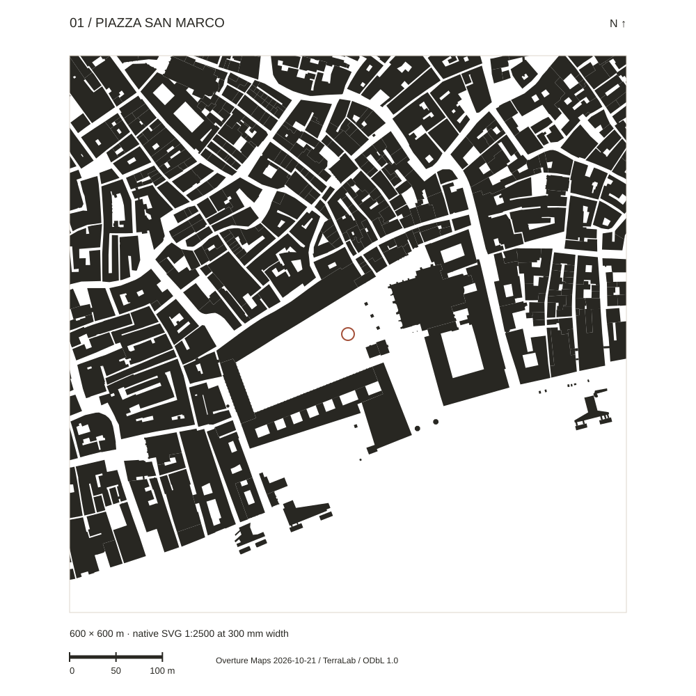

连续柱廊 Continuous arcades
把建筑立面转化为有遮蔽、可穿行的公共边缘。 Turns building fronts into covered, walkable public edges.
01以连续边界组织空间，03以坡地和街墙聚拢，04以公共平台连接基础设施与文化。 01 is organised by continuous edges, 03 by slope and fronts, and 04 by civic ground connecting infrastructure and culture.

Overture 2026 / ODbL

Overture 2026 / ODbL

City of Melbourne 2020 / CC BY 4.0
同名指标同表呈现；不同年份、边界与统计方法保留在每一格里。未取得的年量留空，不用全市游客量补齐。 Named metrics share one table, with dates, boundaries and methods retained in every cell. Missing annual counts are not filled with city-wide tourism.
| 指标 Metric | Piazza San Marco | Piazza del Campo | Federation Square |
|---|---|---|---|
| 所在城市人口 City population |
251,294 人
251,294 residents
2025-12-31；Comune di Venezia全市镇，含大陆地区；不是历史岛城人口。 31 Dec 2025; municipality including the mainland, not the historic islands alone. 出处 Source |
53,588 人
53,588 residents
2025-12-31；Comune di Siena全市镇注册常住人口，不是省级人口。 31 Dec 2025; municipal registered residents, not the province. 出处 Source |
194,481 人
194,481 residents
2025-06-30；City of Melbourne LGA，ABS估计常住人口；大墨尔本另为5,435,590人。 30 Jun 2025; City of Melbourne LGA estimated residents (ABS); Greater Melbourne separately has 5,435,590. 出处 Source |
| 公布广场面积 Published plaza area |
12,600 m²
12,600 m²
Piazza主体，不含Piazzetta；意大利语维基百科公布值，属二级来源。 Piazza proper, excluding Piazzetta; published Italian Wikipedia value, a secondary source. 出处 Source |
11,510 m²
11,510 m²
Sepe等2021论文所列广场表面积；此处四舍五入显示，不由图像推算。 Square surface area listed in Sepe et al. 2021; display rounded, not measured from an image. 出处 Source |
7,500 m²
7,500 m²
Karres en Brands设计资料中的广场面积；运营方现行Main Square场租区域另为5,000 m²。 Plaza area in the landscape designer’s account; current Main Square hire area is separately 5,000 m². 出处 Source |
| 公布活动容量 Published event capacity |
20,000 人
20,000 people
2018年Volo dell’Angelo活动限额；不是当前全时段容量。 2018 Flight of the Angel event cap; not a current permanent capacity. 出处 Source |
约15,000 人
Approx. 15,000 people
2026 Palio中央站立区，赛事安保方说明；不含所有外围看台，也不是平日固定上限。 2026 Palio central standing area, per event security provider; not all grandstands or a permanent ordinary-day limit. 出处 Source |
10,000 人
10,000 people
现行Main Square场地页面公布容量；实际活动配置和审批可能更低。 Current Main Square venue listing; actual event layouts and approvals may be lower. 出处 Source |
| 广场年到访量 Annual square visitation |
未确认
Not established
未取得广场级完整年度统计；不以威尼斯全市游客量或教堂入场人数替代。 No complete square-level annual series found; city tourism and basilica admissions are excluded. 出处 Source |
未确认
Not established
未取得广场级完整年度统计；不使用全市住宿人次替代。 No complete square-level annual count found; city accommodation nights are excluded. 出处 Source |
1,190万以上
11.9 million+
2025–26财年，运营方年报，printed p26；按其Visitors口径，不宣称为去重人数。 FY2025–26 operator report, printed p26; reported “Visitors”, not established as unique individuals. 出处 Source |
| 600米图幅建筑覆盖率 Buildings in the 600 m frame |
49.58%
49.58%
统一600 × 600米图幅；合并并裁切真实建筑轮廓后计算。分母含水面；不是公共开放率。 Union of source footprints clipped to the same 600 × 600 m frame. Denominator includes water; not a public-open-space ratio. 出处 Source |
54.98%
54.98%
统一600 × 600米图幅；合并并裁切真实建筑轮廓后计算。分母含水面；不是公共开放率。 Union of source footprints clipped to the same 600 × 600 m frame. Denominator includes water; not a public-open-space ratio. 出处 Source |
28.97%
28.97%
统一600 × 600米图幅；合并并裁切真实建筑轮廓后计算。分母含水面；不是公共开放率。 Union of source footprints clipped to the same 600 × 600 m frame. Denominator includes water; not a public-open-space ratio. 出处 Source |
用空间、交通、景观、商业、气候、功能、时段、规模、科技与服务对象对齐三案；没有缺乏证据的总分。 Align form, transit, landscape, commerce, climate, programme, calendar, scale, technology and users, without an unsupported total score.
| 共同维度 Shared dimension | Piazza San Marco | Piazza del Campo | Federation Square |
|---|---|---|---|
| 空间形态 Spatial form |
连续围合
Continuous enclosure
Piazza、柱廊与Piazzetta形成由围合到水岸的清晰序列。 Piazza, arcades and Piazzetta form a legible sequence from enclosure to waterfront. 出处 Source |
坡地向心
Sloped inward focus
壳形坡面与低侧市政宫共同形成观看和停留方向。 Shell-shaped ground and the low-side palace establish direction for viewing and staying. 出处 Source |
人工坡地连接
Artificial sloped connection
铁路上盖创造连续公共地面，向东整体抬升约6米。 A rail deck creates civic ground with an approximately 6 m eastward rise. 出处 Source |
| 交通可达性 Public transport |
有公共交通
Public transport present
以水上巴士加步行为主；不是汽车直达型广场。 Waterbus plus walking is the principal approach, not direct car access. 出处 Source |
有公共交通
Public transport present
火车与公交衔接历史中心，最终步行进入广场。 Rail and buses connect to the historic centre, with a final pedestrian approach. 出处 Source |
有公共交通
Public transport present
火车、电车与步行连接CBD及河岸，是高可达的文化节点。 Rail, tram and walking connect CBD and river in a highly accessible cultural node. 出处 Source |
| 景观融入 Landscape integration |
蓝色景观主导
Water-led setting
以潟湖水岸及硬质铺地为主，广场核心并非植被公园。 Lagoon frontage and paving dominate; the square core is not a planted park. 出处 Source |
地形主导，植被有限
Terrain-led; limited planting
坡地与喷泉融入空间体验；核心为硬质铺装，而非连续绿地。 Slope and fountain shape experience; the core is paved rather than continuous planted land. 出处 Source |
河岸＋新增花园
River edge + newer garden
Yarra河形成背景；2025年车库屋顶Test Garden增加植物景观，不能当作2002原广场绿化。 Yarra provides context; the 2025 car-park-roof Test Garden adds planting and is not original 2002 plaza greenery. 出处 Source |
| 商业界面 Commercial edges |
商业环绕
Commercial edge present
咖啡座与商铺沿建筑边缘展开；商业座位不能等同免费公共座位。 Cafes and shops line the edges; commercial seats are not free public seating. 出处 Source |
商业环绕
Commercial edge present
餐饮与外摆沿边缘展开，中心仍承担免费停留与公共活动。 Dining and terraces occupy edges while the centre supports informal stay and civic events. 出处 Source |
商业环绕
Commercial edge present
餐饮、酒吧和文化零售沿建筑边缘分布，与免费公共活动并存。 Dining, bars and cultural retail line buildings alongside free public programming. 出处 Source |
| 气候适应 Climate response |
柱廊遮蔽，潮汐敏感
Arcade cover; tide-sensitive
夏季日晒与湿热、降雨及异常高潮位影响使用；覆盖边缘和预警是主要应对。 Summer sun and humidity, rain and high tides affect use; covered edges and warnings provide responses. 出处 Source |
遮阴依赖建筑
Building-dependent shade
夏季需避晒，凉季有雨；原LaMMA基准年降雨785.7 mm（1961—1990），不是当前年度。 Summer sun and cool-season rain matter; LaMMA’s baseline annual rainfall is 785.7 mm (1961–1990), not a current-year total. 出处 Source |
室内外互补
Indoor/outdoor complement
Atrium覆盖空间和Labyrinth被动环境系统补充室外使用；不宣称露天广场全年舒适。 Atrium cover and Labyrinth passive conditioning complement outdoor use; year-round outdoor comfort is not claimed. 出处 Source |
| 使用功能 Use programme |
多功能
Mixed use
穿行／停留／文化参观／公共活动四类功能并存。 Passage / staying / cultural visits / public events coexist. 出处 Source |
多功能
Mixed use
穿行／停留／文化参观／公共活动四类并存，Palio是特定时段的转换。 Passage / staying / cultural visits / public events coexist, with Palio as a timed transformation. 出处 Source |
多功能
Mixed use
穿行／停留／文化参观／公共活动四类并存，兼有公共集会。 Passage / staying / cultural visits / public events coexist, including civic assemblies. 出处 Source |
| 平日／节假日 Ordinary / holiday use |
节庆强化管控
Event-day access control
平日以游览、步行和外摆为主；狂欢节等活动可限制入口和容量。 Ordinary days emphasise visits, walking and terraces; Carnival events can impose entry and capacity limits. 出处 Source |
赛事改变地面规则
Events change ground rules
平日坐卧和穿行；Palio常规每年2场，赛事时配置赛道、围栏和受控入口。 Ordinary sitting and passage change to track, barriers and controlled entries for the two regular annual Palio races. 出处 Source |
全年活动编排
Year-round programming
普通日自由到访与社区课程，节庆／比赛日形成舞台、屏幕和临时围合。 Ordinary visits and community classes shift to stages, screens and temporary enclosures on celebration and sport days. 出处 Source |
| 容量与年到访量 Capacity & annual visitation |
容量有历史事件口径
Historic event-specific cap
2018活动上限20,000人；广场级年到访量未确认。 2018 event cap: 20,000; square-level annual visitation remains unestablished. 出处 Source |
容量分区，年量缺失
Zoned capacity; annual count missing
2026安保执行记录为中央区约15,000人；不是全广场人数，也没有广场年量。 2026 provider account: approximately 15,000 in the centre; not a whole-square total. Annual square count unavailable. 出处 Source |
运营数据较完整
Stronger operator reporting
Main Square公布10,000人容量；2025–26年到访1,190万以上、389场活动，口径分别保留。 Main Square lists 10,000 capacity; FY2025–26 reports 11.9m+ visitors and 389 events, with scopes kept separate. 出处 Source |
| 科技接入 Technology |
管理型科技
Management technology
活动限流使用数字计数设备；潮汐监测与预警服务通行，非娱乐屏幕主导。 Digital event counting and tide warnings support management; entertainment screens are not the defining infrastructure. 出处 Source |
管理型科技
Management technology
数字交通信息与赛事流量管理为主；未证实核心广场有常设大型数字艺术屏。 Digital transit information and event-flow management are documented; no permanent large digital-art screen in the core is established. 出处 Source |
展示＋环境科技
Display + environmental systems
场地页列65 m² Digital Façade、音响及听力辅助；另有Labyrinth与环境监测系统。 Venue lists a 65 m² Digital Façade, sound and hearing support, alongside Labyrinth and environmental monitoring. 出处 Source |
| 服务对象 Community / tourism |
BOTH · 旅游焦点
BOTH · tourism focus
服务社区仪式与公共生活，同时是全球游客目的地；不赋虚构居民／游客比例。 Serves civic rituals and public life as well as global visitors; no resident/tourist percentage is invented. 出处 Source |
BOTH · 社区仪式突出
BOTH · strong community ritual
Contrade组织和Palio体现社区作用，同时是世界性游客目的地。 Contrade and Palio express community roles alongside international tourism. 出处 Source |
BOTH · 城市文化突出
BOTH · urban culture focus
2025–26支持114个社区组织；同时承接都市文化参观与游客，不能只写成旅游景点。 114 community organisations supported in FY2025–26, alongside cultural visitors and tourists; more than a tourism attraction. 出处 Source |
社区和游客可共享同一场地；BOTH不代表相同比例，而是有两类服务证据。 Communities and visitors may share a place; BOTH records evidence of both roles, not an equal split.
| 案例 Case | 平日 Ordinary weekday | 普通周末／节假日 Ordinary weekend / holiday | 大型活动日 Major event day |
|---|---|---|---|
| Piazza San Marco | 步行、文化参观、短停与餐饮 Walking, culture, short stays and dining | 同类参观与游憩功能；不假定周末人数倍增 Similar visitor and leisure uses; no assumed weekend multiplier | 城市仪式、狂欢节与集体观看 Civic ritual, Carnival and collective viewing |
| Piazza del Campo | 穿行、坐卧、交谈、参观与餐饮 Passage, sitting, conversation, visits and dining | 同类休闲与参观；不推定固定人流增幅 Similar leisure and visits; no assumed fixed rise | Palio与Contrade仪式 Palio and Contrade ritual |
| Federation Square | 穿行、坐靠、文化参观与餐饮 Passage, sitting, cultural visits and dining | 休闲、文化项目与家庭到访；人流增幅未量化 Leisure, culture and families; increase not quantified | 舞台表演、屏幕观看、节庆与公共集会 Performance, shared viewing, festivals and assembly |
把建筑立面转化为有遮蔽、可穿行的公共边缘。 Turns building fronts into covered, walkable public edges.
从围合的Piazza经过Piazzetta到潟湖，空间有方向也有变化。 Moves from enclosed Piazza through Piazzetta to lagoon with both direction and variety.
同一公共地面容纳日常穿行、文化参观及城市仪式。 One civic ground supports daily passage, cultural visits and civic ritual.
地面本身就参与停留与观看，而不只是一片铺装。 Ground itself supports staying and viewing rather than acting only as paving.
狭窄街巷在进入广场时突然开敞，增强整体空间辨识。 Narrow lanes release into the square, strengthening its spatial identity.
Palio将地方社区和公共地面持续联系起来。 Palio keeps local communities connected to civic ground.
通过铁路上盖与坡地，把原本分隔的城市关系重新连接。 Deck and slope reconnect urban relationships separated by rail.
Atrium为露天广场补充覆盖空间与文化入口。 Atrium supplements the outdoor plaza with cover and cultural entrances.
文化机构、数字屏幕与全年活动支持社区和游客共同使用。 Institutions, screen and year-round programming support both communities and visitors.